Todos automáticos y de menos de $100,000.
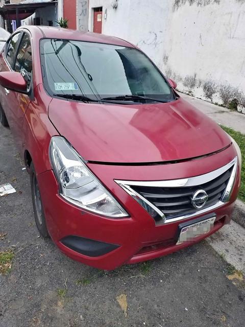
2016 Nissan Versa$85,000 · Guadalajara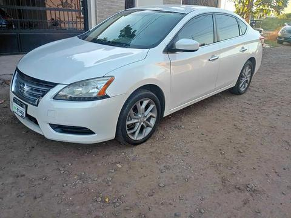
2014 Nissan Sentra$88,000 · Tepic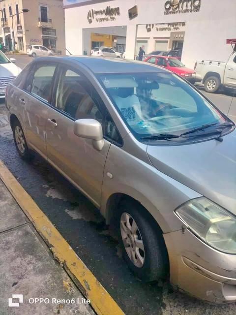
2011 Nissan Tiida$95,000 · Tepic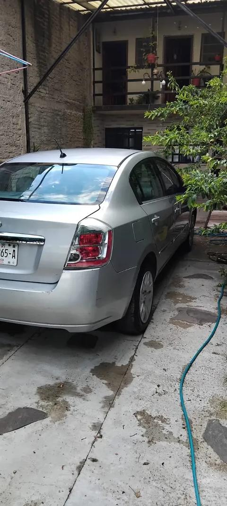
2011 Nissan Sentra$90,000 · Ocotlán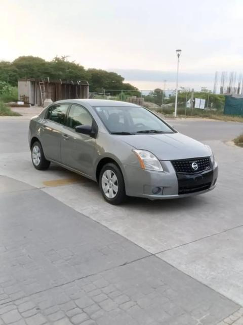
2009 Nissan Sentra$79,000 · Puerto Vallarta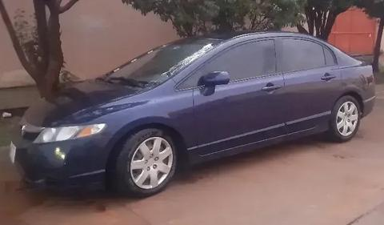
2009 Honda Civic$100,000 · Pánuco de Coronado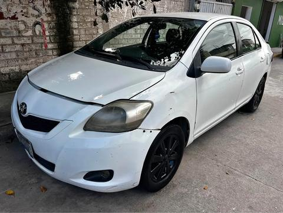
2009 Toyota Yaris$37,000 · Puerto Vallarta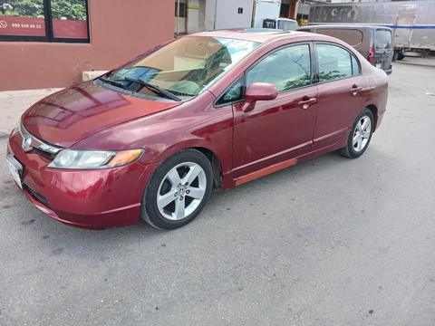
2008 Honda Civic$75,000 · Mérida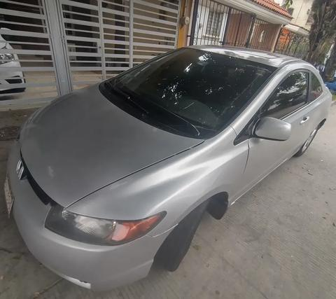
2008 Honda Civic Coupé$99,500 · Tlaquepaque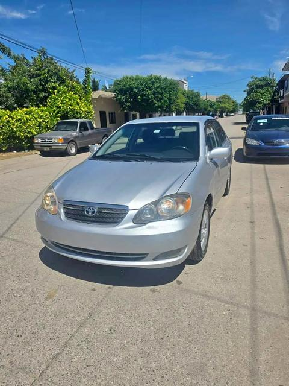
2007 Toyota Corolla$93,000 · Bahía de Banderas 2007 Honda Fit$85,000 · Puerto Vallarta
2007 Honda Fit$85,000 · Puerto Vallarta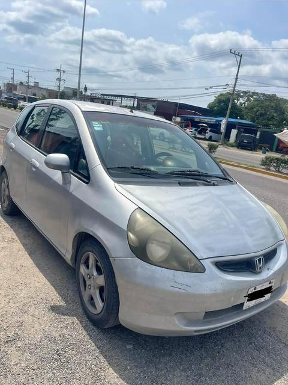
2007 Honda Fit$78,500 · Bahía de Banderas